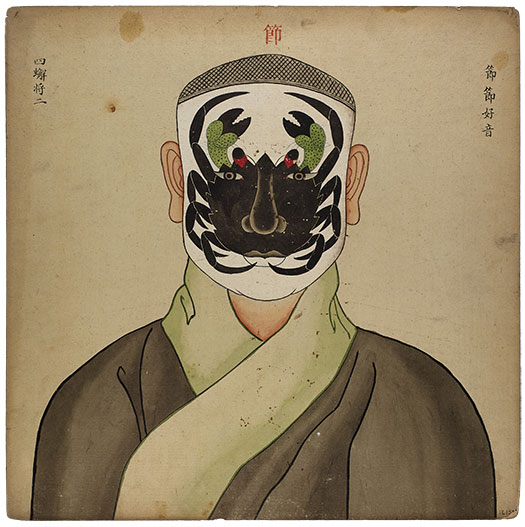
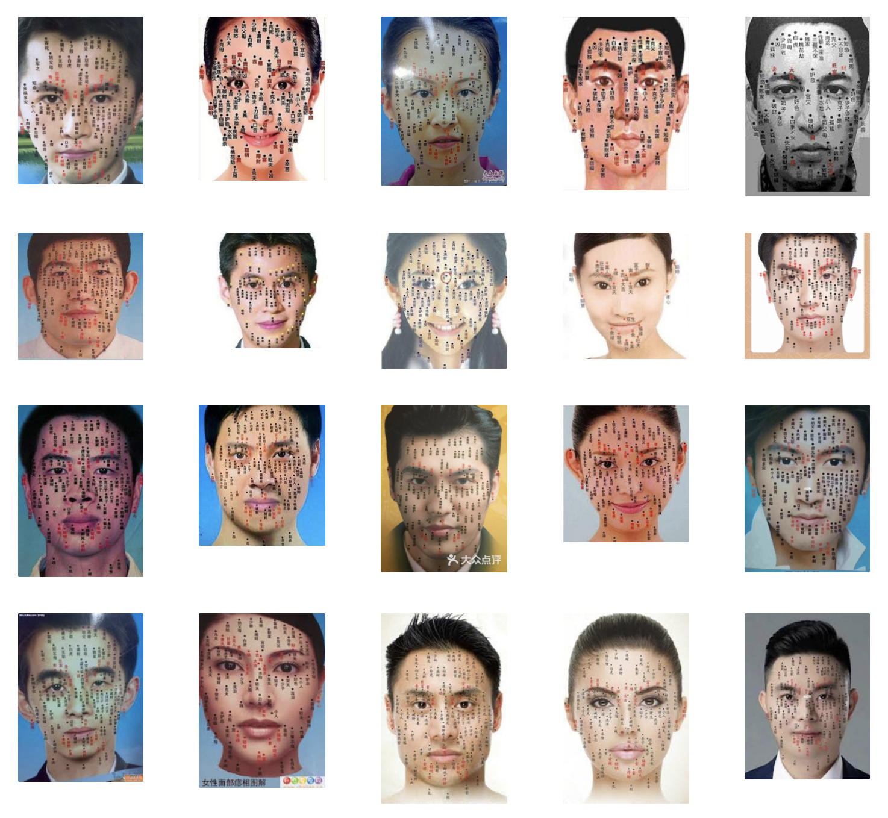

 
How does the human face act as a communication tool in the intersection with the semiotics and semiology of Chinese theater? This question is being answered in the framework of a visitation to a face reader.
The first person perspective (the audience) remembers an instance, where a colleague explained his first encounter with a woman, shrimp lady. He recounts how this colleague, office gnome, put emphasis on the facial structure of the lady and the correlation of this to her foul personality traits, all interpreted through a first glance. The first person perspective’s interest is piqued and decides to visit a seer in a face reading shop to learn more about the estranging world of the theatrics of face reading.
Inspired by theater scripts, this thesis will be narrated through four characters, each representing a different archetype in Chinese Opera. The office gnome is represented by Cao Cao, the penultimate grand chancellor of the Eastern Han dynasty, often given white facial makeup to reflect his treacherous personality. The shrimp lady stands as the clown archetype, the comic of the piece, who often uses colloquial language. The seer, who owns the shop, is represented by the judge character. The audience lives vicariously through the first person perspective in the story, represented by the face reading chart. The audience discovers together with the seer philosophy and theory around the semantics and semiotics of theater, but will also delve deeper into concepts such as dramaturgy and performativity. I’m using a theoretic framework from Steward Hall, Roland Barthes, Goffman Erving and Judith Butler.
How does the human face act as a communication tool in the intersection with the semiotics and semiology of Chinese theater? Can we design our face? Is a human face a visual communication tool/symbol? Looking at the Chinese opera theater as a framework.
The face as an interface
The semiotics of the face
Face-to-face interactions (dramaturgical analysis)
Performativity of the face
The spectacle of the face
The face in Chinese Opera
Can we design our face? Fate vs. free will
::: ### The Storefront (1st person POV) {#the-storefront-1st-person-pov } The storefront, a big glass window decorated with bright rainbow LED fairy lights. The curtains, semi transparant. The display window, filled with acupuncture models, a big A1 portrait face reading poster with sloppy typography and a magenta plasma ball shaped into the Buddha’s head. The tone and the atmosphere is set. When I enter the shop, I hear the sound of wind chimes resonating through the space. The only two other sounds I could hear was the humming of a little minibar sticking out from the small reception desk and the ticking of an elegant antic wooden pendulum clock.
Ever since I heard my colleague tell me how he disliked this lady he met at church upon first glance, I was intrigued why he would make such a resolute judgement. The sentence I remember, was something along the lines of “Her face isn’t too auspicious.” It got me curious to find out what is so unlucky about this person’s face. Are we speaking of pretty privilege and how owning a conventionally unattractive face would lend you to a harsher treatment by others or is it just a euphemism to shadily say the same thing “She’s a shrimp. A seafood, mostly consumed for their meat, but their head is discarded right into the trash bin. In other words. She’s unlucky to be born with such a unpleasant face.”
However, when I finally met this lady from the church, I was perplexed, why he’d deem her un-beautiful. She is actually ticking all the boxes of a gorgeous woman. She has plump lips, big eyes, a beauty mark on her left eyelid and stern eyebrows. The only thing I could imagine not conforming to his standards would be that her jawline is slightly too big for her face. I don’t mind a strong jawline… I saw a shadow move through the hallway towards the main area, making the bead curtain going click-clack.
A man in his mid 40s made his way to the reception desk, slouching the slippers along the black and white tiled floor. Halfway through his walk, he noticed where I was standing and waved his long fingered hands at me. “Hello, how could I help you out?” I noticed he had a black tattoo of a Peking opera performer on his wrist. A face that showed dominance, as if he holds authority. Dooming and stern. Judgement day.
A face. An animal’s front side of the head, where the eyes, nose, mouth are located. Together with an organism’s butthole, it’s one of the most fundamental body parts our animal species have been developing over the past millions of years. No wonder linguistically and etymologically, the term ‘face’ has the following different meanings. The face of the mountain (front side something). Losing face (losing one’s dignity). To pull down one’s facade (a front you put up to hide real emotions). An animal’s organ that’s so important to its existence. While it’s a survival tool of consumption, breathing and stimulation of its senses, it’s also become one of the most vulnerable body part for an organism. A variety of muscle contractions and nerve twitches have made it, so that’s easy to read one’s intentions or thoughts, through the emotions one is emitting. In turn, this allows cunning opportunistic predators to read their prey and attack them when they least expect it. The face has now become a communication tool. Are you comfortable, scared, happy, tired, or perhaps diseased? Are you uncomfortable, angry, assertive, sad, or healthy? Your face speaks volumes. Before we read words or decoded voices, we in fact had the 1.0 hardware of communication. Facial expressions.
As Roland Barthes, argues within semiology there’s different components in the communication of codified visuals. He argues that there’s a messenger and a receiver. The messenger who emits a code, in whatever visual form, and a receiver, who receives a codified visual image. This code will be interpreted and decoded to make further actions. No wonder why words associated with our face, such as, impressive or expressive have made it into different languages. It’s exactly that physical exchange of information that the face has been facilitating. Impression and expression. Inhaling and exhaling. Winking and seeing. Singing and hearing. Of course, we as a species have understood this game of communication for a while now. Otherwise, we wouldn’t have been here today, hasn’t it been for our survival skills. We’ve noticed that other than just reading a face you can also ‘write’ a face, in other words, we know how to manipulate the expression of true emotions in order to gain something from it. This thing to gain, might be approval of a community around you, not sticking out to get picked on or just to have power in negotiating.
In sociology, above mentioned manipulation of communication is also understood as part of Goffman Erving’s dramaturgical analysis. He argues that face-to-face interactions between people are always an attempt to control or guide the impression others make of them by manipulating their setting, appearance and manner. At the same time, the other individual is trying to form and obtain information about the other. We are constantly performing our emotions, dependant on the society one was raised in, what social occasion one is at, or simply to emphasise your emotion to yourself. Therefore, I argue we have an innate and intimate connection to the art of performance and theater. Our facial expressions are in fact a theatrical and spectacular phenomenon. The Theatrics of Face Reading what are the different rituals in the act of face reading? Face reading, also known as physiognomy, is a cultural practice, that requires a face reader (a shaman or fortune-teller), who interprets facial features to give a peek into one’s future or personality traits. The HR of the middle ages. Culturally biased opinions on beauty and morality of course are embedded in these practices, which I’m not arguing against; it’s a pseudoscience. However, my fascination stems from the fact that it shows how much a person could be concerned about one’s face. We want to control something that was given to us by mother nature and seek deeper meaning in the materiality of our body. In fact, physiognomy and shamanism are believed to be the primitive precedence of current day Chinese Opera. If we focus on the performative aspect of emoting with our face, we can even abridge this theory further into the origins of theater. I’ll specifically focus on Peking opera and the painted face still as a communication tool. In the Chinese canon of operatic performances, we see a specifically signified layer of symbolic face paint that tell a story to the audience, beyond the facial performativity of the actor. This had a reason. In order to be democratic and perform for anyone, even illiterate people (which was most of people in the feudal Dynastic periods), the sung lyrics were not the only way of expressing a narrative, but additional background information, characterisation and archetyping was expressed through aesthetic symbols on the face of the actor.
An art form that has never been unified or homogenised and has always been developing over centuries of time amongst different genres and localisations. That’s what Chinese Opera is. However, over the last century, we’ve seen a big decrease of the performance of this Opera style affected by a range of different factors. The opera form has always been influenced by big historical events, such as the proliferation of the art form during the Mongol rule in the Yuan Dynasty, or the propagandising of the Opera during the Cultural Revolution. Nowadays, the performance style has lost a lot of interest from the younger generation, despite government funding. We see new ways of adaptation of the opera, such as the digitisation of the stage, the usage of social media as platform or the borrowing of contemporary western theatre stage design, But also the usage of these Chinese Operatic aesthetics in other forms of art, like fashion photoshoots, games, tourism and films. I’m interested in the semiotic and semantic structures that lay beneath the Chinese Opera. How can I as a graphic designer use this skeleton of a living fossil, reappropriate it and design my own Opera for it? Perhaps I can focus specifically on the face make-up, since I’m worrying about the scope of the entire Opera. :::
Goffman, Erving. The Presentation of Self in Everyday Life. Overlook, 1973.
Beato, Massimo Roberto. “From Mask to Flesh and Back: A Semiotic Analysis of the Actor’s Face between Theatre and Cinema.” Topoi, vol. 41, no. 4, 2022, pp. 755–769., https://doi.org/10.1007/s11245-022-09808-y.
Jack, R. E., & Schyns, P. G. (2015). The human face as a dynamic tool for Social Communication. Current Biology, 25(14). https://doi.org/10.1016/j.cub.2015.05.052
Zhang, N. (1987). A Semiotic Study of the Chinese Theater (thesis).
Hall, S., Griffith, E. D., & Hall, S. (1991). The work of representation.
Posted by Jena A Zelezny on October 6, 2014 at 10:44 V. B. (n.d.).
Judith Butler: Performativity and dramaturgy. Performance Philosophy. Retrieved January 17, 2023, from https://performancephilosophy.ning.com/profiles/blogs/judith-butler-performativity-and-dramaturgy
# Hello World
## This is a subtitle
[Simply some text]{ .biggie }
I want a *bold* text
::: { style="background-color: pink" }
The content of this div is boring
:::